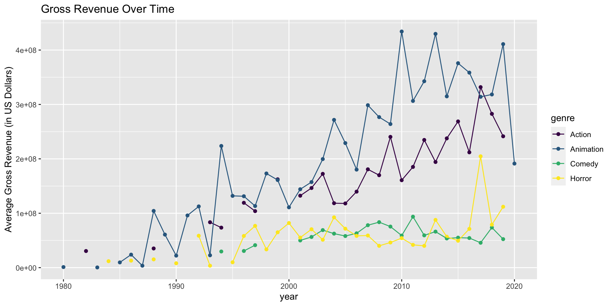
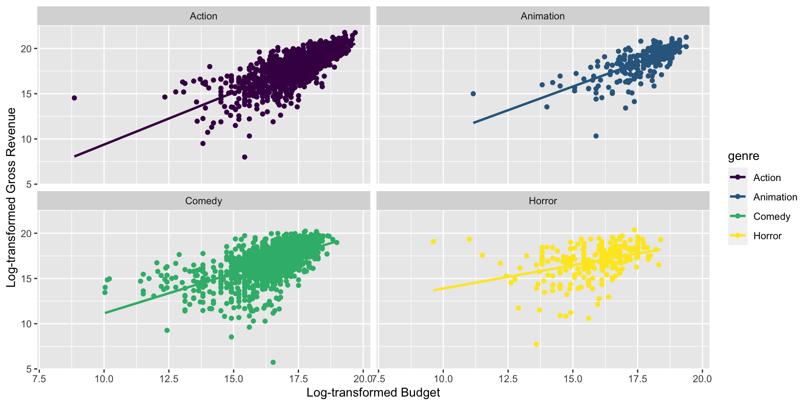

library(readr)
library(tidyverse)
library(viridis)
library(DT)AE 01: Movie Budgets and Revenues
Important
For this AE, you will discuss the questions in groups and submit answers on Ed Discussion. This AE does not count towards the Application Exercise grade.
We will look at the relationship between budget and revenue for movies made in the United States in 1986 to 2020. The dataset is created based on data from the Internet Movie Database (IMDB).
Data
The movies data set includes basic information about each movie including budget, genre, movie studio, director, etc. A full list of the variables may be found here.
movies <- read_csv("https://raw.githubusercontent.com/danielgrijalva/movie-stats/master/movies.csv")View the first 10 rows of data.
movies |>
slice(1:10)# A tibble: 10 × 15
name rating genre year released score votes director writer star country
<chr> <chr> <chr> <dbl> <chr> <dbl> <dbl> <chr> <chr> <chr> <chr>
1 The S… R Drama 1980 June 13… 8.4 9.27e5 Stanley… Steph… Jack… United…
2 The B… R Adve… 1980 July 2,… 5.8 6.5 e4 Randal … Henry… Broo… United…
3 Star … PG Acti… 1980 June 20… 8.7 1.20e6 Irvin K… Leigh… Mark… United…
4 Airpl… PG Come… 1980 July 2,… 7.7 2.21e5 Jim Abr… Jim A… Robe… United…
5 Caddy… R Come… 1980 July 25… 7.3 1.08e5 Harold … Brian… Chev… United…
6 Frida… R Horr… 1980 May 9, … 6.4 1.23e5 Sean S.… Victo… Bets… United…
7 The B… R Acti… 1980 June 20… 7.9 1.88e5 John La… Dan A… John… United…
8 Ragin… R Biog… 1980 Decembe… 8.2 3.30e5 Martin … Jake … Robe… United…
9 Super… PG Acti… 1980 June 19… 6.8 1.01e5 Richard… Jerry… Gene… United…
10 The L… R Biog… 1980 May 16,… 7 1 e4 Walter … Bill … Davi… United…
# ℹ 4 more variables: budget <dbl>, gross <dbl>, company <chr>, runtime <dbl>Analysis
We begin by looking at how the average gross revenue (gross) has changed over time. Since we want to visualize the results, we will choose a few genres of interest for the analysis.
genre_list <- c("Comedy", "Action", "Animation", "Horror")movies |>
filter(genre %in% genre_list) |>
group_by(genre,year) |>
summarise(avg_gross = mean(gross)) |>
ggplot(mapping = aes(x = year, y = avg_gross, color=genre)) +
geom_point() +
geom_line() +
ylab("Average Gross Revenue (in US Dollars)") +
ggtitle("Gross Revenue Over Time") +
scale_color_viridis_d()
What do you observe from the plot?
Next, let’s see the relationship between a movie’s budget and its gross revenue.
movies |>
filter(genre %in% genre_list, budget > 0) |>
ggplot(mapping = aes(x=log(budget), y = log(gross), color=genre)) +
geom_point() +
geom_smooth(method="lm",se=FALSE) +
xlab("Log-transformed Budget")+
ylab("Log-transformed Gross Revenue") +
facet_wrap(~ genre) +
scale_color_viridis_d()
Exercises
Suppose we fit a regression model for each genre that uses budget to predict gross revenue. What are the signs of the correlation between
budgetandgrossand the slope in each regression equation?Suppose we fit the regression model from the previous question. Which genre would you expect to have the smallest residuals, on average (residual = observed revenue - predicted revenue)?
Post your response on ED Discussion.
[Time permitting] Discuss the following: Notice in the graph above that
budgetandgrossare log-transformed. Why are the log-transformed values of the variables displayed rather than the original values (in U.S. dollars)? Post your group’s response in the AE 01 Movie Budgets comments on Ed Discussion.
References
Appendix
Below is a list of genres in the data set:
movies |>
arrange(genre) |>
select(genre) |>
distinct() |>
datatable()